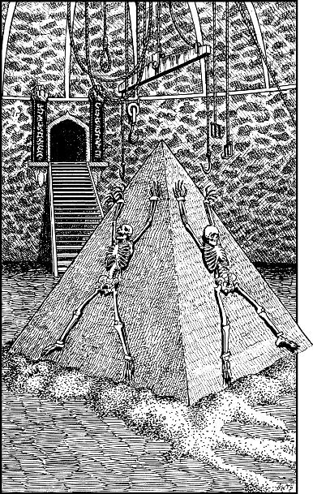

306
Patiently you wait until the avenue is clear; then you leave the tower archway and hurry across to the iron door. This heavy portal has no lock or latch, and when you push against it with the sole of your boot, it creaks open on its dry hinges.
Inside you discover a large circular hall, dimly illuminated by a phosphorescent mould that encrusts the walls and high ceiling. The centre of the hall is dominated by a large pyramid of hard-packed cinder ash. Pairs of black iron rings are cemented into each face of the pyramid, and the skeletal remains of three humans hang from manacles attached to these rings. On the far side of the hall is a wide flight of iron steps that ascend to a dark portal. Standing on either side of this shadowy exit are columns of red-veined obsidian, engraved with glowing silver runes.

If you wish to approach the pyramid and examine the skeletons, turn to 51.
If you wish to investigate the dark portal, turn to 135.